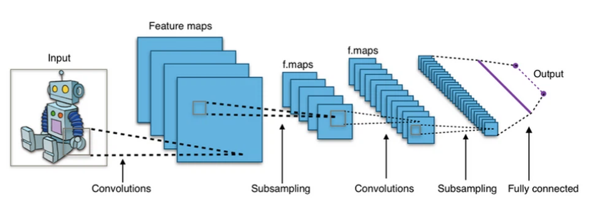
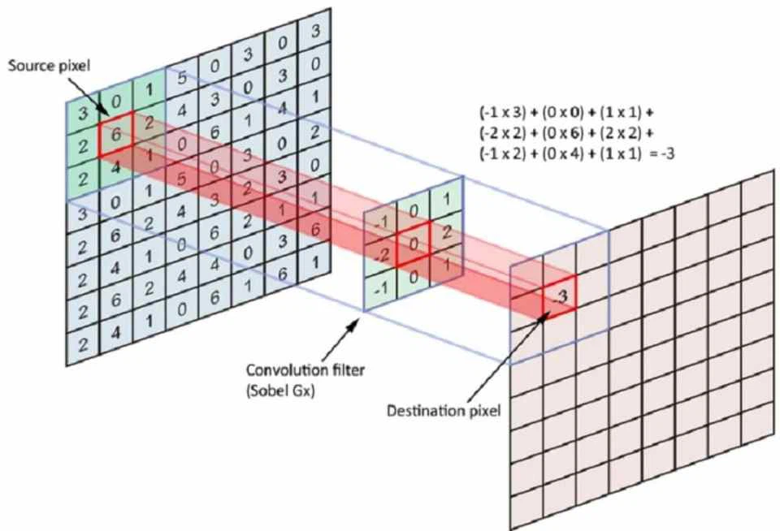
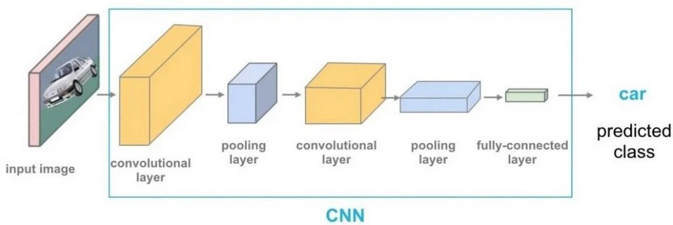
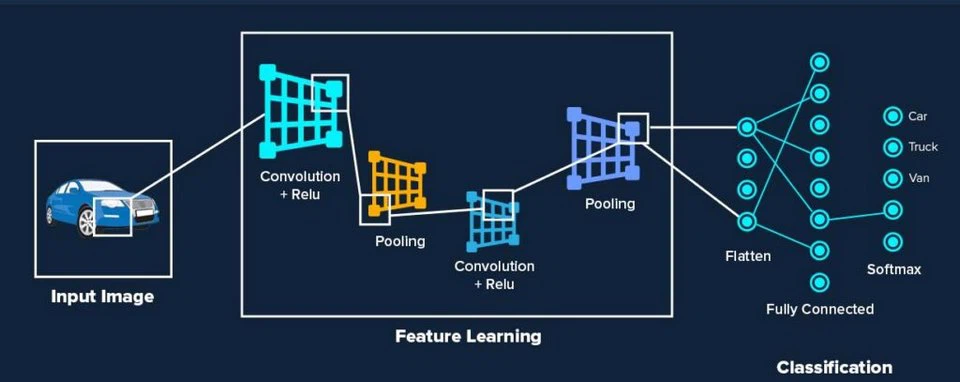

Convolutional Neural Network là gì?
- Convolutional Neural Network là một trong những mô hình Deep Learning tiên tiến giúp cho chúng ta
xây
dựng được những hệ thống thông minh với độ chính xác cao.
- Do sử dụng các lớp liên kết đầy đủ giữa các điểm ảnh và node , các mạng nơ-ron nhân tạo truyền
thẳng
thường bị hạn chế bởi kích thước của ảnh , ảnh càng lớn thì số lượng liên kết càng tăng nhanh kéo
theo
sự bùng nổ khối lượng tính toán.
- Sự liên kết đầy đủ này cũng là sự dư thừa với mỗi bức ảnh , các thông tin chủ yếu thể hiện qua sự
phụ
thuộc giữa các điểm ảnh với những điểm xung quanh nó mà không quan tâm nhiều đến các điểm ảnh ở cách
xa
nhau.
=> Mạng CNN ra đời với kiến trúc thay đổi , có khả năng xây dựng liên kết chỉ sử dụng một phần cục
bộ
trong ảnh kết nối đến node trong lớp tiếp theo thay vì toàn bộ ảnh như trong mạng nơ-ron truyền
thẳng.
- Các lớp cơ bản trong một mạng CNN bao gồm : lớp tích chập (Convolutional), lớp lấy mẫu (Pooling)
và
lớp kết nối đầy đủ (Full-connected) :

Cấu trúc mạng CNN
Mạng CNN là một tập hợp các lớp Convolution chồng lên nhau và sử dụng các hàm nonlinear activation
như ReLU và tanh để kích hoạt các trọng số trong các node. Mỗi một lớp sau khi thông qua các hàm
kích hoạt sẽ tạo ra các thông tin trừu tượng hơn cho các lớp tiếp theo.
Mỗi một lớp sau khi thông qua các hàm kích hoạt sẽ tạo ra các thông tin trừu tượng hơn cho các lớp
tiếp theo. Trong mô hình mạng truyền ngược (feedforward neural network) thì mỗi neural đầu vào
(input node) cho mỗi neural đầu ra trong các lớp tiếp theo.
Mô hình này gọi là mạng kết nối đầy đủ (fully connected layer) hay mạng toàn vẹn (affine layer). Còn
trong mô hình CNNs thì ngược lại. Các layer liên kết được với nhau thông qua cơ chế convolution.
Layer tiếp theo là kết quả convolution từ layer trước đó, nhờ vậy mà ta có được các kết nối cục bộ.
Như vậy mỗi neuron ở lớp kế tiếp sinh ra từ kết quả của filter áp đặt lên một vùng ảnh cục bộ của
neuron trước đó.
Mỗi một lớp được sử dụng các filter khác nhau thông thường có hàng trăm hàng nghìn filter như vậy và
kết hợp kết quả của chúng lại. Ngoài ra có một số layer khác như pooling/subsampling layer dùng để
chắt lọc lại các thông tin hữu ích hơn (loại bỏ các thông tin nhiễu).
Trong quá trình huấn luyện mạng (traning) CNN tự động học các giá trị qua các lớp filter dựa vào
cách thức mà bạn thực hiện. Ví dụ trong tác vụ phân lớp ảnh, CNNs sẽ cố gắng tìm ra thông số tối ưu
cho các filter tương ứng theo thứ tự raw pixel > edges > shapes > facial > high-level features.
Layer cuối cùng được dùng để phân lớp ảnh.

Ý tưởng xây dựng Convolutional Neural Network
Trường tiếp nhận cục bộ (Local receptive field)
- Trong mạng Neural Convolutional (CNN), trường tiếp nhận cục bộ (local receptive field) đề cập đến
phạm
vi không gian trên ảnh đầu vào mà mỗi neuron trong tầng convolutional kết nối đến. Mỗi neuron trong
tầng
convolutional chỉ kết nối với một phần nhỏ của ảnh đầu vào thay vì kết nối với toàn bộ ảnh. Đây
chính là
trường tiếp nhận cục bộ của neuron.
- Khi áp dụng phép tích chập lên ảnh đầu vào, các neuron trong tầng convolutional chỉ xử lý thông
tin từ
một phần nhỏ của ảnh, đóng vai trò như một khu vực cục bộ. Qua đó, mỗi neuron có thể tập trung vào
việc
nhận diện các đặc trưng cục bộ. Chẳng hạn như cạnh, góc hoặc texture trong ảnh một cách hiệu quả.
Trọng số chia sẻ (Shared weight and bias)
- Trọng số chia sẻ (shared weights) được áp dụng cho các bộ lọc (filters) sử dụng trong tầng
convolutional của mạng. Ý tưởng chính là các neuron trong cùng một tầng convolutional sử dụng cùng
một
bộ lọc để thực hiện phép tích chập trên đầu vào. Tương tự, trọng số chia sẻ cũng được áp dụng cho
bias.

Lớp tổng hợp (Pooling layer)
- Lớp tổng hợp (Pooling layer) là một phần quan trọng của kiến trúc CNN. Nền tảng được sử dụng để
giảm
kích thước của Feature map (bản đồ đặc trưng) tạo ra từ tầng convolutional.
- Lớp tổng hợp thường được sử dụng sau mỗi tầng convolutional để giảm chiều dài yêu của dữ liệu,
giảm độ
phức tạp tính toán và tạo ra tính bất biến đối với sự thay đổi nhỏ trong dữ liệu đầu vào.

- Có hai loại tổng hợp phổ biến được sử dụng trong CNN là:
* Max Pooling: Trong tầng tổng hợp theo phương thức này, giá trị lớn nhất trong một vùng cụ thể của
Feature map được chọn để tạo ra Feature map mới với kích thước giảm xuống.
* Average Pooling: Trong tầng tổng hợp theo phương thức này, giá trị trung bình của một vùng cụ thể
của
Feature map được lấy để tạo ra Feature map mới.
Cách chọn tham số cho CNN
1. Số các convolution layer: càng nhiều các convolution layer thì performance càng được cải thiện.
Sau khoảng 3 hoặc 4 layer, các tác động được giảm một cách đáng kể.
2. Filter size: thường filter theo size 5x5 hoặc 3x3.
3. Pooling size: thường là 2x2 hoặc 4x4 cho ảnh đầu vào lớn.
4. Cách cuối cùng là thực hiện nhiều lần việc train test để chọn ra được param tốt nhất.
